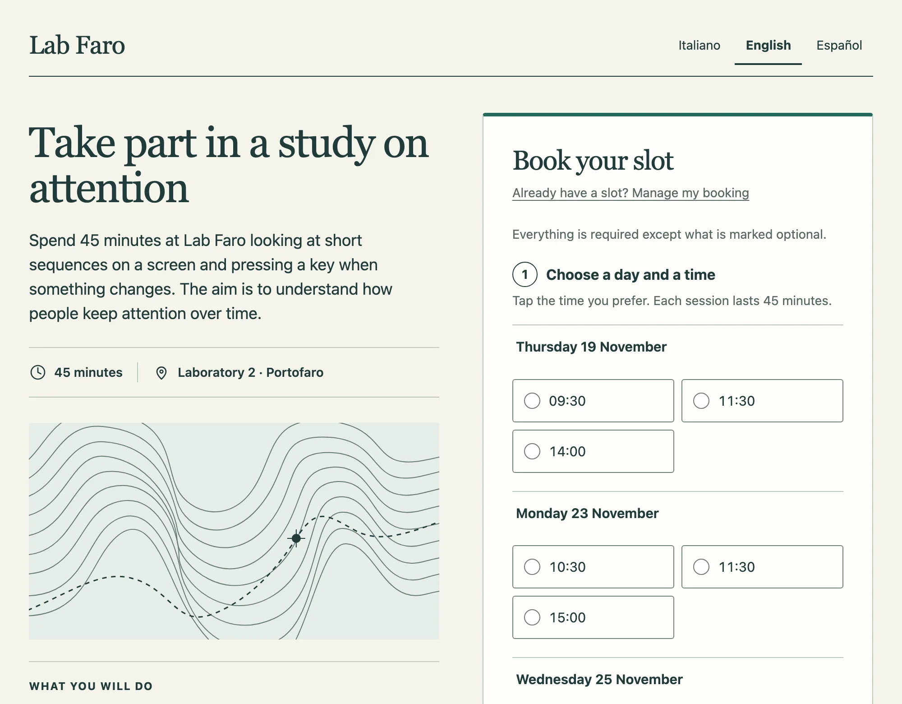
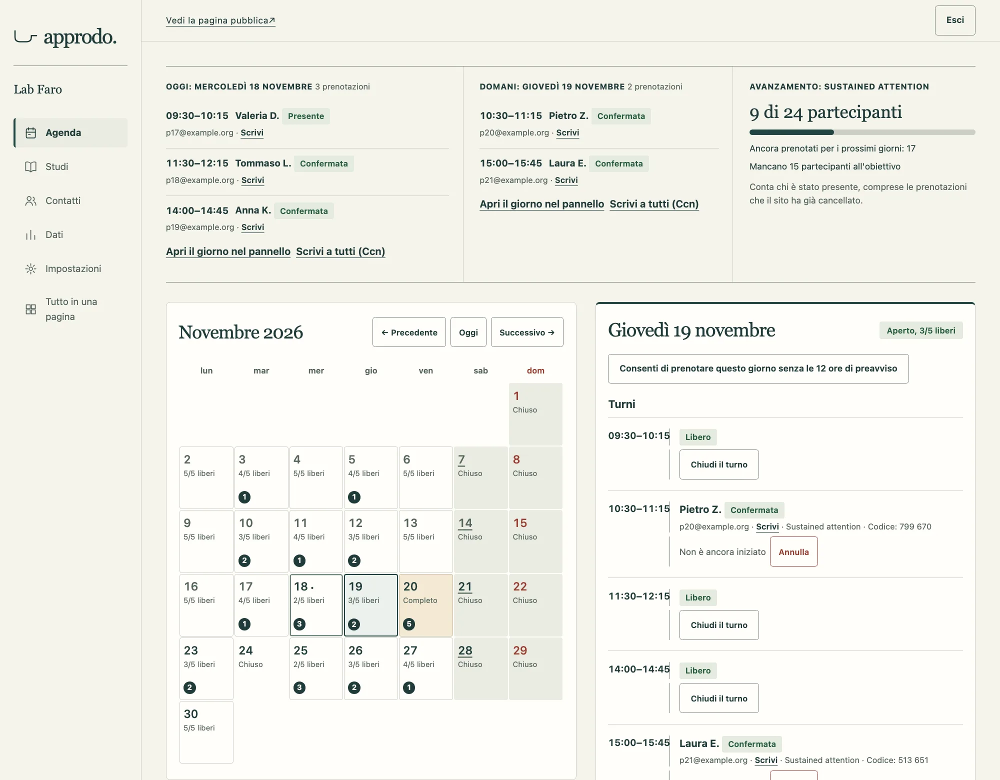
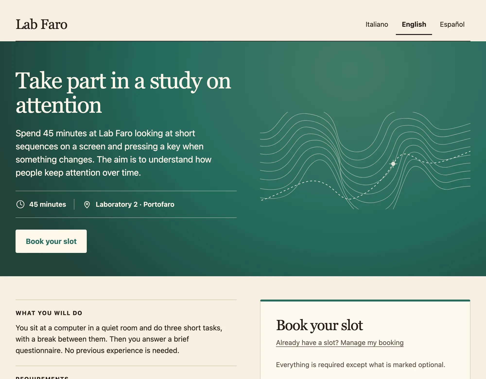
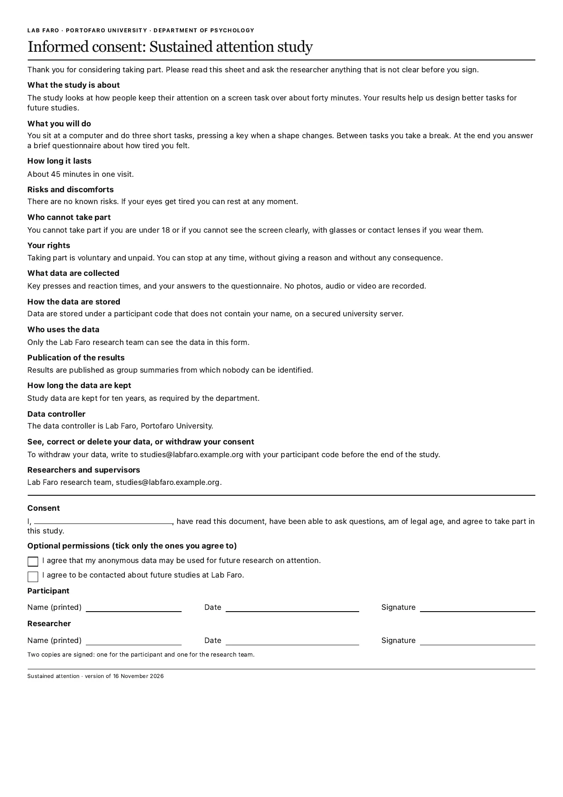

Five sections, one dashboard
Agenda, Studies, Contacts, Data and Settings. The dashboard works without JavaScript.
Free · Open source · With attribution
A public page for participants. A private dashboard for your lab. Sessions of any length, starting at the times you choose.
Runs on Cloudflare’s free plan. One file to configure.

01 / Time, as your lab needs it
A session can last 50 minutes while the starts are 60 minutes apart, for example 10:00, 11:00 and 12:00. That leaves 10 minutes between sessions. You choose the start times.
You choose the starts. Approdo keeps the space between them.
The whole schedule, in site.config.js: sessionMinutes: 50, slotMinutes: 60, defaultTimes: ["10:00", "11:00", "12:00"].
02 / A look inside
Participants pick a day and a start time. The lab opens days, follows attendance and keeps the study organised. These are real screens, using an invented lab. Every picture opens at full size.

Agenda, Studies, Contacts, Data and Settings. The dashboard works without JavaScript.
Public pages in Italian, English and Spanish, as many as you offer. The dashboard is in Italian or Spanish, set in site.config.js.
Two test suites run in GitHub Actions on every push. The Worker has no runtime dependencies.

Study texts, declarations and the participant target are kept together in Studies.

Three exports. Each says whether it contains personal data, before you download it.
Without e-mail, the booking is confirmed on screen at once, with a calendar file. Optional confirmations and reminders use a small Apps Script on a Gmail account dedicated to the study. With mail on, a booking must be confirmed by e-mail within two hours or the place is released.


03 / Set up your lab
site.config.js.A Cloudflare Worker and a D1 database, on the free plan. The Worker creates and updates its own tables.
You need a GitHub account and a free Cloudflare account. The form asks for several fields: fill in only ADMIN_PASSWORD, a password of at least 16 characters (a long sentence is fine), and leave the rest as proposed. Do not change the deploy command.
site.config.jsIn the new repository the button created in your GitHub, open site.config.js, replace the example lab, place and study details, and commit. Cloudflare publishes again within a minute or two. Until the examples are replaced, the site says it is not configured and accepts no bookings.
Sign in to /admin. Open the days and start times you want to offer, then share the public address.
If the form does not work on your account, use one of the other two routes. If the button does not work on your account, the repository also describes an install with a coding agent and one from the terminal (the terminal route creates the database in the EU).
04 / Care for participants
Booking records are deleted 30 days after the session (the default, you can change it). Only weekly counts without names remain.
Requests are limited to 20 per 10 minutes per network. For that limit, a one-hour code derived from the network address is kept; the address itself is not.
New bookings pause once the site has sent 80 e-mails in 24 hours. Turnstile is optional; with it on, people who book need JavaScript.
Weekly counts have no names. In a small study, someone who knows who attended may still connect a count to a person.
Read what the product stores05 / In use
Every installation sends an anonymous daily count by default. The lab can switch it off. The collector’s source is in the repository.
The count started in November 2026. Totals appear here once installations have reported on two different days. How the count works.
A random installation identifier, the version and the number of sessions marked as attended. No names, e-mail addresses, lab name or site address.
An installation is active if its dashboard was opened in the last 30 days. It is counted from the second day it reports.
A lab can switch it off with one line: usageCount: false.
06 / Before you install
Approdo needs a server and a database, so it does not run on GitHub Pages. The deploy button does not guarantee an EU database. If EU jurisdiction is required, use the setup script with --jurisdiction eu, as described in the repository.
The privacy and consent texts are a starting point. Adapt them to your study. Have your institution’s data protection officer and the ethics committee review them for your study.
A normal Gmail account sends about 100 e-mails a day. New bookings pause once the site has sent 80 e-mails in 24 hours. It can prepare invitations for future studies, but does not send them by itself.
There are no separate user accounts or individual permissions. The lab shares one dashboard password.
An independent, open-source project
A developer who builds apps for the web and the Mac and tools for coding agents.
Approdo is free and open source. Its licence, the Attribution Assurance License with one added condition, asks for two things: the line “Made with Approdo by nerln” stays visible at the bottom of your booking pages, and a study that used Approdo cites it.
If Approdo is useful to your lab, star the repository or tell a colleague who runs studies.